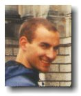
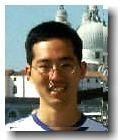
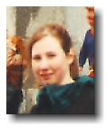
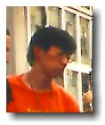
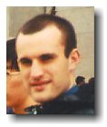
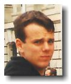

Students
Here’s a brief description of the other UBC students working and living in Hannover.
|
Students Here’s a brief description of the other UBC students working and living in Hannover. |
|  Ben Forsyth, Computer Science: No question about it. He chose the right program. He likes to relate everything and anything to computers and networks. And he’s good at it too. Also, Ben loves to party. No matter what time or place, he’ll be up to it. Hats off to Big (6’4") Ben for surviving the first month in Germany without an alarm clock. |
| Dave Du, Engineering Physics: You will never see a bigger smile than one coming from Dave. Always upbeat and sometimes a little jumpy. That’s Dave. |
|  Ivar Chan, Computer Science: With his dedication, he’ll be conversing in German in no time. Ivar’s a very hard worker. Sometimes too hard. Hopefully, you’ll see his name come up in some of our trips. |
|  Karyn Moffatt, Electrical Engineering: A nice change in the male dominated world of engineering. Karyn gets the award for the craziest trip planner. She wants to travel Britain, Ireland, France, and all the countries on the eastern border of Germany within a span of 15 days. Gooooood Luck. Karyn's European Website |
|  Keith Lau, Engineering Physics: Strong at heart, weak against alcohol. Keith almost woke up the whole hostel as he stumbled up the stairs after drinking in Berlin. |
|  Paul Sharman, Mechanical Engineering: The king of sarcasm. All in good taste though. Also, watch what you say when you’re around Paul, because if you set yourself up, he’ll burn you big time. That only applies before 8 pm, as it’s bedtime for Paul after that. I don't think any of us want to be in his shoes, as Paul gets to spend that last 3 months without a house key. He lost his very sought-after, irreplaceable, uncopyable, un-everything, key. Paul's European Website |
|  Ryan Bryde, Electro-Mech Engineering: Courageous or crazy? I choose both. Crossing the street against a red light (a no-no in Germany) is his hobby. Ryan has impeccable timing. He ran a light in front of a speeding cop car. (Crazy). Instead of stopping, he tried to get away. (Courageous). He gets credit as the only one of us to get charged by law so far. His impeccable timing goes for getting pooed on as well. Birds play target practice with him. Count 'em, three times so far. Ryan's European Website |
 johnnyo@canada.com
johnnyo@canada.com